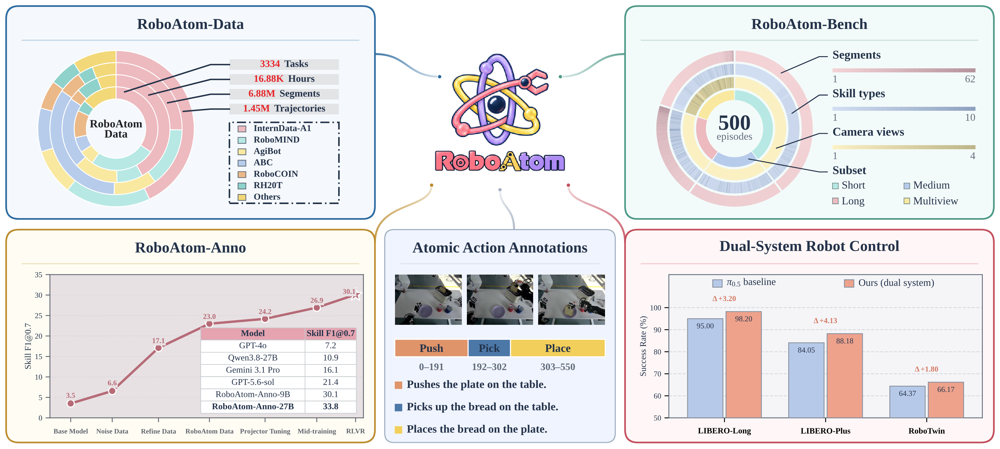
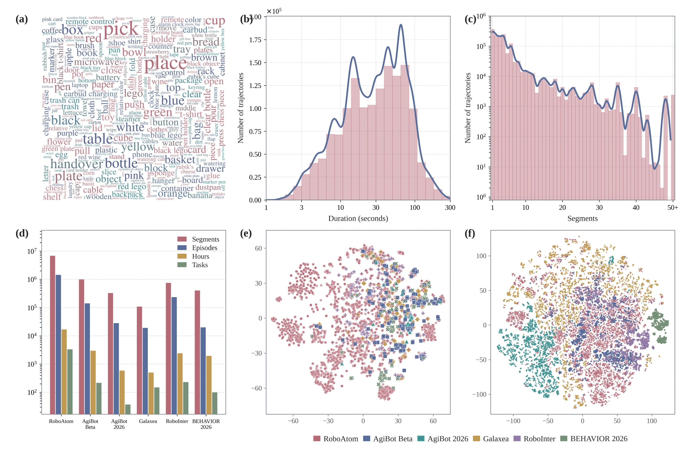
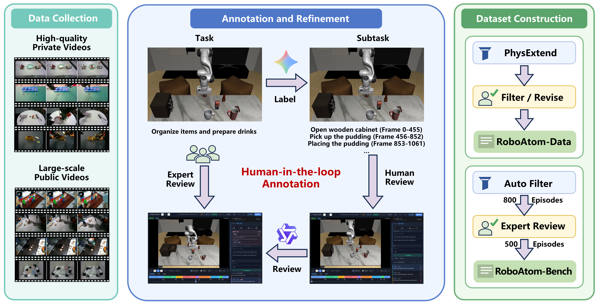
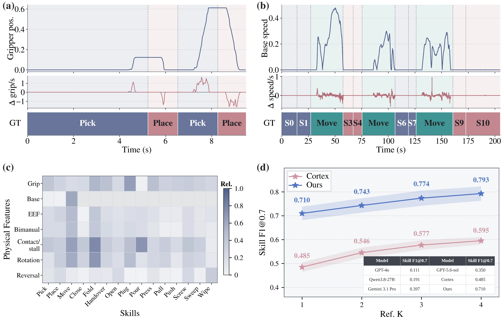
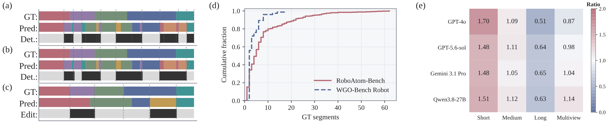
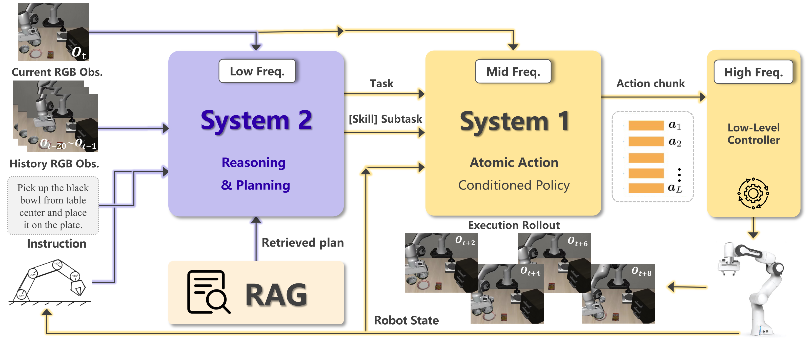

Skill category
A label shared across sources. The released dataset retains a 29-class vocabulary.
Atomic-action supervision for robot learning
Large-scale Atomic-Action Supervision for Robot Learning
Unified, time-aligned annotations connect skill categories and action descriptions to temporal boundaries across heterogeneous robot trajectories.

Exact released-set counts: 1,446,974 trajectories and 6,876,282 skill-labeled segments.
01 / RoboAtom-Data
Existing robot trajectories gain a consistent segment-level interface for learning, annotation, and evaluation.
A label shared across sources. The released dataset retains a 29-class vocabulary.
Object and action details remain in natural language instead of being collapsed into the category.
Start and end frames align every segment with its source trajectory.

02 / Construction
A unified protocol, model-assisted annotation, human review, PhysExtend, and multi-stage quality control form one construction pipeline.

Gemini 3.6 Flash proposes ordered segments and initial boundaries. Human annotators refine skills, descriptions, step order, and frames against the original videos.
PhysExtend transfers annotations across repeated executions with the same ordered skill sequence, jointly localizing boundaries under order constraints.
Sampling, targeted propagation improvements, visual semantic checks, and human verification address structural and language inconsistencies.
03 / PhysExtend
Motion intensity, pauses, direction changes, gripper state, and holding-state consistency provide skill-dependent cues.

04 / RoboAtom-Bench
Expert-reviewed trajectories test skill recognition, temporal boundary localization, and sequence structure under a shared protocol.
200 trajectories
1-4 GT actions100 trajectories
5-8 GT actions100 trajectories
9-62 GT actions100 separate trajectories
Synchronized camera inputs
05 / RoboAtom-Anno
The same time-aligned supervision supports automatic video annotation and atomic-action-conditioned robot control.
RoboAtom-Anno combines robot-domain mid-training, supervised fine-tuning on task-sampled RoboAtom annotations, and GRPO optimization. RoboAtom-Bench tasks are excluded from training.
The 27B model reaches 33.8 Skill F1@0.7 on task-disjoint RoboAtom-Bench. The 9B model reaches 30.1 on that benchmark and 48.3 temporal F1@0.7 on the external WGO-Bench Robot evaluation.
Dual-system execution

A Qwen3.8-27B planner combines a task-plan prior with visual observations and execution history to select the current skill and action description.
A fine-tuned π0.5 policy conditions on the selected atomic-action instruction and produces robot action chunks.
06 / Results
Complete primary tables for automatic annotation, downstream control, and same-task annotation extension.
Quality metrics are on a 0-100 scale. Cost is USD per source-video hour.
| Model | RoboAtom-Bench | WGO-Bench Robot | ||||||
|---|---|---|---|---|---|---|---|---|
| mIoU | F1@0.7 | Skill F1@0.7 | Edit | Cost | mIoU | F1@0.7 | Cost | |
| GPT-4o | 31.5 | 13.9 | 7.2 | 47.7 | 0.971 | 46.1 | 14.6 | 0.800 |
| GPT-5.6-sol | 44.0 | 28.0 | 21.4 | 63.4 | 4.330 | 41.9 | 31.3 | 3.375 |
| Gemini 3.1 Pro | 42.5 | 24.4 | 16.1 | 61.8 | 4.516 | 52.1 | 29.6 | 4.389 |
| Qwen3.8-27B | 38.4 | 20.1 | 10.9 | 56.6 | 0.103 | 51.3 | 24.3 | 0.096 |
| Qwen3.5-9B | 9.6 | 6.2 | 3.5 | 28.7 | 0.008 | 12.8 | 1.7 | 0.007 |
| RoboAtom-Anno-9B | 55.1 | 41.0 | 30.1 | 76.7 | 0.006 | 61.7 | 48.3 | 0.004 |
| RoboAtom-Anno-27B | 56.4 | 43.2 | 33.8 | 76.8 | 0.078 | 66.0 | 49.2 | 0.054 |
Success rates (%). Comparisons use matched post-training budgets, observation spaces, and action spaces within each benchmark.
| Method | LIBERO Long | LIBERO-Plus | RoboTwin | ||||||
|---|---|---|---|---|---|---|---|---|---|
| Spatial | Object | Goal | Long | Overall | Clean | Random | Avg. | ||
| π0.5 | 95.00 | 93.01 | 85.23 | 79.93 | 78.56 | 84.05 | 80.70 | 48.04 | 64.37 |
| Our method | 98.20 | 92.46 | 91.86 | 86.34 | 82.29 | 88.18 | 82.02 | 50.32 | 66.17 |
LIBERO-Plus Overall covers all 10,030 tasks. RoboTwin Avg. is the Clean/Random mean. These are results under the paper's evaluation settings, not a universal performance guarantee.
One-reference results. Cost is USD per source-video hour; episode accuracy requires every subtask to be correct.
| Model | mIoU | F1@0.7 | Skill F1@0.7 | EA (%) | Cost |
|---|---|---|---|---|---|
| GPT-4o | 48.2 | 20.7 | 11.1 | 10 | 0.888 |
| Gemini 3.1 Pro | 61.1 | 44.9 | 39.7 | 39 | 2.877 |
| GPT-5.6-sol | 58.9 | 37.8 | 35.0 | 46 | 3.510 |
| Qwen3.8-27B | 46.1 | 25.4 | 19.1 | 25 | 0.051 |
| Cortex | 66.5 | 49.8 | 48.5 | 37 | 4.8 × 10-4 |
| PhysExtend | 76.8 | 71.6 | 71.0 | 65 | 2.8 × 10-5 |
Episode accuracy is evaluated on 100 trajectories, one per task. The extension evaluation uses 100 tasks with five manually annotated and reviewed trajectories per task.
07 / Resources
External destinations are intentionally left unconfigured. Entries remain non-interactive until a real URL is supplied.